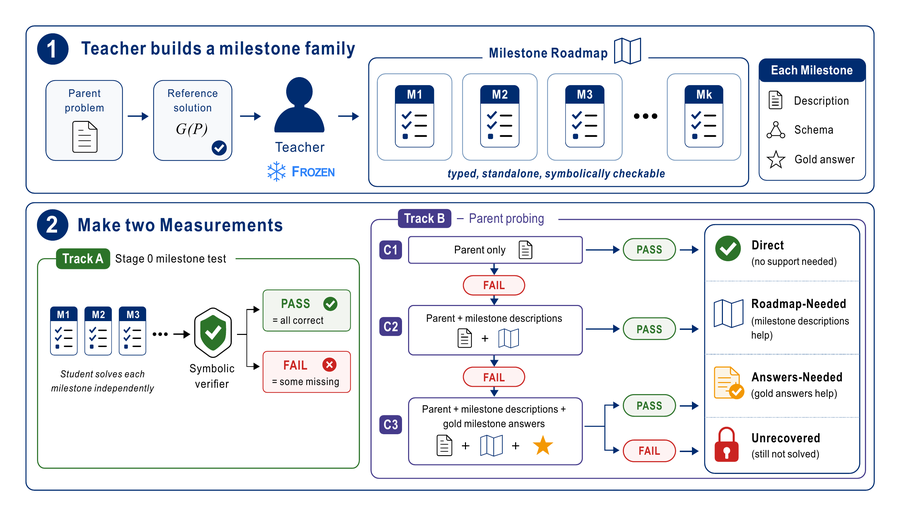
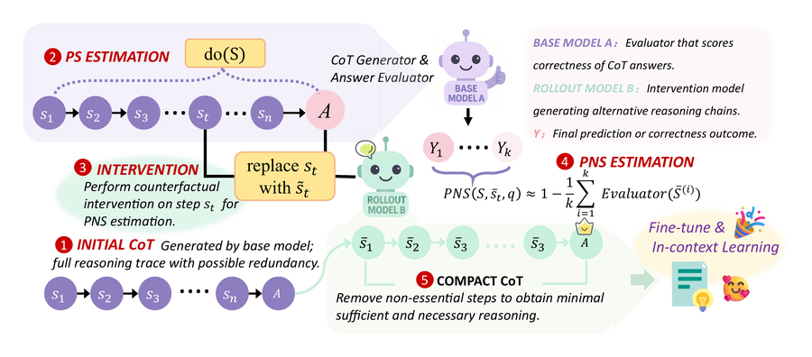
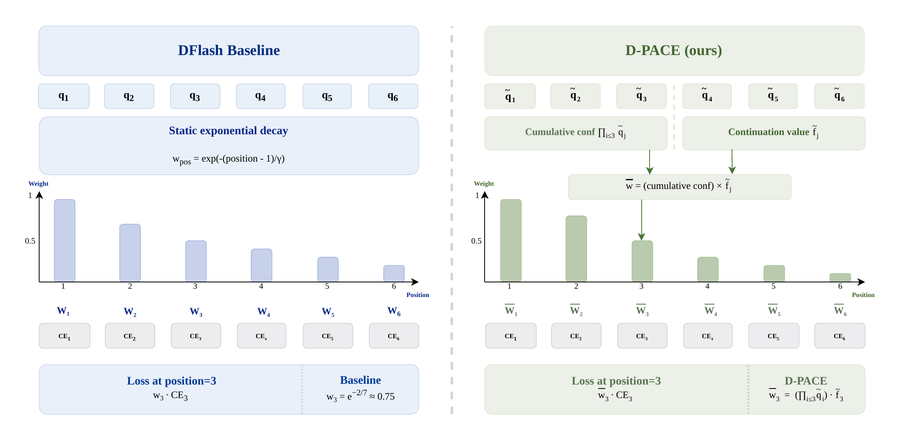
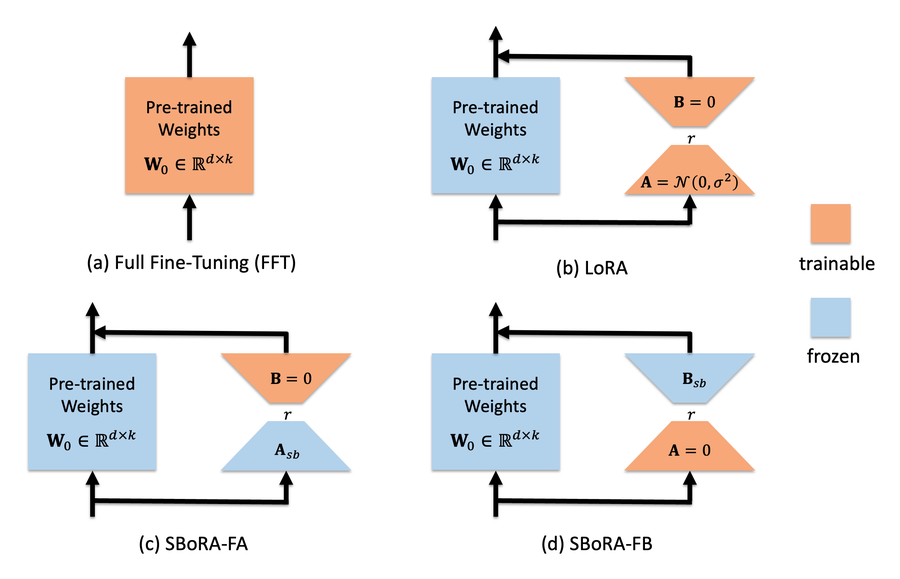

Zhuohan Wang
M.S. Student, Harvard University
Ex-MERL, Ex-SenseTime
Email: zhuohan_wang [at] g.harvard.edu
I am a master's student in Computational Science and Engineering at Harvard University. I received my B.Eng. in Computer and Data Engineering from City University of Hong Kong, ranked first in my class and graduating summa cum laude, and worked with Prof. Lai-Man Po on parameter-efficient fine-tuning. I spent a year as an intern on the LLM post-training team at SenseTime Research, mentored by Dr. Litong Feng. I also worked with Dr. Mengyue Yang on causal reasoning in LLMs. In 2026 I was a research intern at MERL with Dr. Pu (Perry) Wang and Dr. Anoop Cherian.
My long-term goal is to build systems that can think at least as well as the best human researchers, across intellectual domains, in a way that keeps improving with scale. I am interested in automated discovery and in reasoning in language, vision and other modalities. I also work on efficient training and decoding.
I am also exploring a startup that applies AI to a real e-commerce business. Outside research, I enjoy investing and playing badminton. I am always happy to discuss shared interests, so feel free to reach out.
News
- OracleLadder is accepted to NeurIPS 2026 and nominated for an oral presentation.
- D-PACE is accepted to NeurIPS 2026 as a Spotlight.
- Started a research internship at MERL (Mitsubishi Electric Research Laboratories).
- Started my M.S. at Harvard University.
- Causal Sufficiency and Necessity Improves Chain-of-Thought Reasoning is accepted to NeurIPS 2025.
- Graduated from City University of Hong Kong.
- Joined SenseTime Research as an algorithm researcher intern.
Selected Publications
Reasoning
-

Solving Every Step Is Not Enough: Milestone Oracles Reveal a Composition Gap in LLM Math Reasoning
LLMs can solve every step of a math problem on its own and still fail the whole problem, even when given a roadmap and every step's answer. OracleLadder locates the failure with increasing levels of oracle help. This composition gap is the largest of five failure types for all six models (8B to 671B), covering 33 to 48% of problems.
-



Efficient Training and Inference
-

-

SBoRA: Low-Rank Adaptation with Regional Weight Updates
A LoRA variant that initializes one low-rank matrix with orthogonal standard-basis vectors, so only a few rows or columns of each weight change. It halves LoRA's trainable parameters, or doubles its rank at the same budget, and improves commonsense and arithmetic reasoning.


* equal contribution. Full list on Google Scholar.